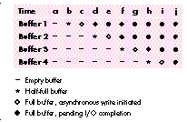
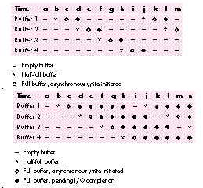

In this column, we go spelunking in the frost-covered caverns of QuickDraw GX. We'll
discover how QuickDraw GX I/O buffering works and how to use that knowledge to
squeeze optimal performance from a printer driver, whether PostScriptTM, raster,
or vector. We'll also learn how to find (and avoid) the common bottlenecks.
Suppose you've been working on your first QuickDraw GX printer driver, and the big
moment has arrived. Your printer's innards begin to whir and spin, and your heart
beats a little faster. Your driver is actually printing! As you see that image being
drawn on the page, your breathing quickens, and then . . . the printer stops. You run to
your Macintosh to see if your driver has crashed (again), but no, not this time. A few
seconds later the printer starts up again. And stops. And starts. This repeats until,
several minutes later, the page is finished.
What's going on? Is your printer defective? Maybe. But then again, the problem may
lie elsewhere. You probably have a data delivery problem on your hands. For one
reason or another, the data isn't getting to the printer fast enough to keep it busy. To
understand why, we need to look at what goes on behind the scenes when a driver tells
QuickDraw GX to send data to your printer.
Your first reaction might be, "Ah, I need to implement some sort of asynchronous I/O
to keep a steady stream of data going to my printer." That's a good thought, but
QuickDraw GX already provides asynchronous I/O. Let's look a little deeper.
There are four QuickDraw GX printing messages that are used to implement buffering:
How do you get GXBufferData and GXFreeBuffer to work asynchronously, so that the
driver's data is sent to the printer as fast as possible? GXBufferData, in its default
implementation, already works asynchronously. However, GXFreeBuffer has to work
synchronously. Let's look at why.
In the following figures, assume that we have a driver with four buffers, and that at
every time interval (a, b, c, and so on) half of a buffer can be filled by the driver. (In
reality, the timeit takes to fill a buffer will vary as rendering time varies.)
First, let's say that the device can't process the data fast enough to empty out the first
buffer before that buffer is needed again. Figure 1 shows what will happen. At the
following time intervals shown in Figure 1, here's what takes place:

Figure 1. Device processes data very slowly
This is a worst-case scenario from the CPU's point of view. The device's
communications pipe can't take the data fast enough to keep up with the buffering. Data
buffering is delayed until pending writes are completed. There isn't any alternative --
you must free up a buffer in order to have a place to put the new data. Note that it may
take several seconds before a buffer is freed. During this delay, the CPU sits idle,
although it could be preparing more data.

Figure 2. Device processes data very quickly
Figure 3. Device and buffers are working optimally
Figure 2 shows another nonoptimal situation. The buffers are being filled and
processed so quickly that at any given time, two -- or even three -- of the buffers
aren't even being used. This is a waste of memory, and also increases the latency
between buffers.
Figure 3 shows the ideal situation. This is what you should strive for, although it may
not be attainable, depending on your device. In this case, there's always a buffer free.
Data is buffered as fast as it's available and (with luck) is sent to the device as fast as
the device can service it. In practice, this may be a difficult (if not impossible)
scenario to achieve. In a moment, we'll see why. First, let's take a look at the resource
that specifies the buffering parameters for a QuickDraw GX printer driver.
THE GXUNIVERSALIOPREFSTYPE RESOURCE
The gxUniversalIOPrefsType ('iobm') resource controls the behavior of the standard
buffering and device communication for QuickDraw GX printing. Here's what this
resource looks like:
type gxUniversalIOPrefsType
{
longint standardIO = 0x00000000,
customIO = 0x00000001;
longint; // number of buffers to allocate
longint; // size of each buffer
longint; // number of I/O requests that
// can be pending at once
longint; // open/close timeout in ticks
longint; // read/write timeout in ticks
};
The first field in the resource specifies whether you're using QuickDraw GX's standard
communications methods (like PAP or serial) or if you're going to provide custom
device communications routines (to support SCSI or Centronics printers, for
example). If you set this field to customIO, QuickDraw GX won't perform needless
memory allocation or initialization to support the standard I/O routines.
The next field indicates the number of buffers you'd like QuickDraw GX to allocate for
you (0 indicates none). In low-memory situations, fewer buffers than this number
may be created.
Following the number of buffers is the size of each buffer, and then the intimidating
"number of I/O requests that can be pending at once" field. A good value for this field is
the number of buffers + 3. This represents the possibility of a pending write (or
read) on each buffer, as well as a pending status, read, and close connection request.
The rest of the fields in this resource are used to set timeout thresholds.
If a driver doesn't include an 'iobm' resource, the system defaults to two 1K buffers
and 10-second timeout values. Because every device is different, it's unlikely that the
default options will be ideal for your printer.
DIFFERENCES BETWEEN IMAGING SYSTEMS
PostScript, raster, and vector drivers send differently formatted data to their devices,
and this has an effect on how you should set up your buffers.
PostScript drivers. PostScript drivers send text or binary data to their printers,
and are generally connected via PAP (Printer Access Protocol). As it turns out, the
low-level PAP driver in QuickDraw GX makes sure that no more than (512 * flow
quantum) bytes are sent to your device at a time. The flow quantum (normally 8 for
LaserWriters) is specified in your gxDeviceCommunicationsType ('comm') resource.
So, if your PAP printer uses a flow quantum of 8, a maximum of only 4K will be sent
to the printer at a time, even if your buffer size is 8K. This means that a buffer size of
(256 * flow quantum) or (512 * flow quantum) usually works well for PAP devices.
Vector drivers. There are some distinct differences between vector drivers and
other types of drivers:
As a result, vector drivers work best when they use several small buffers -- for
example, buffers of 256 bytes each. This helps keep both the Macintosh and the
printer busy.
Raster drivers. Raster drivers send bitmaps to their printers, often with control
codes to skip over white areas in the image. The way you set up your buffers for raster
drivers can have a dramatic effect on performance -- more so than for other types of
drivers. The bitmap for a US Letter-sized page on a 24-bit, 300-dpi color device can
require 24 megabytes of data. With that much data to process, your code has to be as
efficient as possible. For raster drivers, your buffers should be at least the size of one
(preferably two) maximum-sized scan lines for your device.
BUFFERING BOTTLENECKS
There are several things that can have an impact on the flow of data to your device.
We'll discuss the most common ones here.
The number of buffers specified in your 'iobm' resource. If you used only
one buffer in your printer driver, you'd constantly hit the "pending write" lock-out
situation described earlier. As soon as you finished filling the buffer, you'd have to
wait for it to empty before buffering more data. You should therefore always have at
least two buffers.
In an ideal situation, two buffers are all you'd need -- one would be always available
for buffering while the other is sent to the device. However, you'd need a very fast
device to manage this, as we'll soon see. In practice, three or four buffers is a good
start for PostScript and raster drivers. For vector drivers, start with eight buffers.
The size of the buffers specified in your 'iobm' resource. As mentioned
earlier, this is critical for vector and raster drivers. For vector devices, even
moderate-sized buffers (2K) can cause your plotter to stall while data is being
buffered, and your Macintosh to stall while that data is being plotted. Remember, a
little vector data goes a long way. Start with 256-byte buffers.
If you're writing a raster driver using the default implementation of GXRasterDataIn,
make sure that at least one worst-case scan line of data will fit in your buffers. (Keep
in mind that your compression scheme might expand the data.) Your buffers must be
this large because the gxDontSplitBuffer buffering option is used by the default
implementation of GXRasterDataIn. If your buffer isn't big enough to hold an entire
scan line, you'll get into an infinite loop as QuickDraw GX keeps rejecting buffers and
asking for one that can hold all the data. There are two reasons for using the
gxDontSplitBuffer option:
Using the gxDontSplitBuffer option does mean that some portion of each buffer will
probably be unfilled. If splitting the data between buffers isn't a problem for your
device, override GXRasterDataIn and don't specify gxDontSplitBuffer when you buffer
the data.
How big should your buffers be? As mentioned before, probably at least the size of two
maximum- sized scan lines. In a minute, we'll see how you can tune your buffer size.
How fast QuickDraw GX can prepare data. It's going to take QuickDraw GX time
to prepare the data that it hands your driver. For raster drivers, make sure that your
gxRasterPrefsType ('rdip') resource is set up to ask only for the data that you need.
Don't make QuickDraw GX spend any more time or pass more data than it needs to.
Time hits from postprocessing. This applies to drivers that do their own
halftoning and the like. Can you gain significantly by doing your own halftoning? It's
possible, but keep in mind that QuickDraw GX offers a wide range of halftoning and
dithering options, and using these methods is likely to take a similar amount of time as
just passing your driver the raw data and having it halftone that.
The throughput of the communications pipe. Your device might want to
process data faster than the computer sends it due to hardware constraints of, for
example, the serial port.
How fast the device can receive data. Similarly, the device itself might be the
bottleneck. Keep in mind that the speed the manufacturer claims may not refer to using
the printer for printing graphics. Graphic images usually take longer to process than
text. The Macintosh (with some minor irrelevant exceptions) prints in graphics mode
only, so the claimed rate may not be realistic.
WHICH BOTTLENECKS AFFECT YOU?
Before you can improve the performance of your printer driver, you have to find your
bottlenecks. Here are some tests that help determine where your bottlenecks are.
How long does it take QuickDraw GX to prepare data? If you're writing a
raster driver, implement a GXRasterDataIn override that does nothing but return
noErr. For PostScript or vector drivers, do the same thing in a message override for
GXBufferData orGXVectorPackageShape, respectively. If your PostScriptor vector
driver renders some shapes on its own, you should also override
GXPostScriptProcessShape or GXVectorVectorizeShape. In this override, simply
forward the message unless you're passed a shape that your driver will render itself.
In that case, don't forward the message; just return noErr. This way, your calculations
won't include time spent rendering shapes that your driver will be handling
completely on its own.
Next, print a typical several-page document and see how many pages per minute you
get. If this is slower than the device can print, you might want QuickDraw GX to create
an image file of the data before sending it.
Calculating pages per minute is easy. Suppose your "typical" 4-page document
takes 72 seconds to render. Then (72 seconds ÷ 4 pages) = 18 seconds per page
and (60 seconds ÷ 18 seconds per page) = 3.3 pages per minute. *
To create an image file, override GXCreateImageFile and forward the message along
with a combination of the image file options (such as "gxMakeImageFile |
gxEntireFile"). There are optionsfor creating image files for each plane, each page, or
both. For details, see the QuickDraw GX interface file PrintingMessages.h.
If you use the debugging version of QuickDraw GX, rendering is slower. For
accurate benchmarks, use the nondebugging QuickDraw GX extension for timing tests.
*
How long is your code taking to postprocess data? Do the same thing as you
just did, but include any of your own code (for halftoning, compressing, or whatever)
that you normally execute. Compare this to the rate you got from the last test to see
how your code is affecting rendering time. Again, an image file might be an option if
this is a problem. Also, consider using QuickDraw GX's built-in halftoning and
dithering instead of your own.
How fast does the device want data? Suppose your device is a
two-page-per-minute, 300-dpi, 4-bit device with a maximum page size of 8 by 10
inches. Some quick arithmetic (see "Calculating Device Data Requirements") tells you
that you need over 7 megabytes of data per minute, though you can reduce this
requirement substantially with compression.
There's another way to determine whether the communications speed is too low: Make
your driver roll everything into an image file before sending anything to the printer.
Then, print a typical document and see if the printer stays busy once it starts
receiving data. If not, the data isn't being sent to your device fast enough. There's not
much you can do about this except reduce the amount of data you send or redesign the
hardware.
Finally, don't package white space and send it to your device if the device supports
skipping it. The GXRasterDataIn message passes a rectangle that indicates where the
nonwhite scan lines are in a given band. If you don't skip over the white space on a
page, you're wasting time packaging and sending useless data.
Is the buffer usage optimal? Whenever you send GXBufferData, first send
GXFreeBuffer. Check to see if GXFreeBuffer returns immediately. If it doesn't, the
buffering is being blocked by a pending write. An alternate approach is to implement
an override for GXFreeBuffer that subtracts the tick count determined before calling
Forward_GXFreeBuffer from the tick count when the call returns. You could record
this in a file and look at the information after a print job finishes. Large values
indicate that your driver is blocked while waiting for a free buffer.
Try increasing your buffer size or adding more buffers until the lock-out goes away.
Note that if your device isn't fast enough, you may never (with reasonable buffer
allocation) reach a state in which you never have to wait. Your device (or the
communications pipe) might be so slow that the only way to keep a buffer free is to
allocate enough buffers to hold the entire page. That's what I would consider
unreasonable buffer allocation. However, if you can reach this state of always having a
buffer free, back off on the number of buffers or buffer size slightly so that you begin
to get occasional lock- outs again. This is your optimal buffer configuration.
EYES TO THE FRONT, DRIVER
Now that you can optimize your QuickDraw GX buffering and printing, you can avoid
the sporadic printing that so many driver writers fall prey to. Your drivers will have
the printers humming steadily along, your users will be pleased, and other driver
developers will stand in awe of you.
A two-page-per-minute, 300-dpi, 4-bit device with a maximum page size of 8 by 10
inches requires (300 x 300 x 4) ÷ 8 bits per byte = 360,000 bits per square
inch, or a little under 44K bytes per square inch. The entire page requires (45,000 x
8 x 10) = 3,600,000 bytes per page or about 3.5 megabytes per page. To achieve the
device's maximum two-page-per-minute throughput rate, you need to pass twice this
amount, or over 7 megabytes of data per minute.
Now, suppose you use compression and also remove beginning-of-line and interline
white space to reduce a typical page to, say, 25% of its raw size. Then you're looking
at 7 x .25 or about 1.8 megabytes per minute. That's still about 29K bytes per second
or about 300 Kbaud to satisfy this device. This can still be a problem if your interface
is running at only 9600 baud.
DAVE HERSEY (AppleLink HERSEY) is known to small relatives as "Uncle Mommy."
He spent the last three years working with QuickDraw GX and helping developers learn
its wily ways. In his spare time, Dave helps his nephews and niece hunt for buried
pirate treasure on Joe's Island in Wayne, Maine. *
The best reference for writing QuickDraw GX printer drivers is Inside Macintosh:
QuickDraw GX Printing Extensions and Drivers .*
Thanks to our technical reviewers Hugo Ayala, Tom Dowdy, Daniel Lipton, and Harita
Patel. *